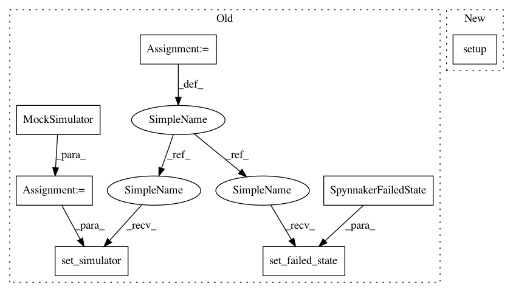

a9a94ac0c6137354e644ba7f4b1cc4136ce84bb5,unittests/model_tests/neuron/test_neural_parameter.py,,test_range_list_as_list,#,57
Before Change
def test_range_list_as_list():
simulator = MockSimulator()
globals_variables.set_failed_state(SpynnakerFailedState())
globals_variables.set_simulator(simulator)
spec_writer = FileDataWriter("test.dat")
spec = DataSpecificationGenerator(spec_writer, None)
try:
After Change
def test_range_list_as_list():
MockSimulator.setup()
spec_writer = FileDataWriter("test.dat")
spec = DataSpecificationGenerator(spec_writer, None)
try:
In pattern: SUPERPATTERN
Frequency: 3
Non-data size: 7
Instances
Project Name: SpiNNakerManchester/sPyNNaker
Commit Name: a9a94ac0c6137354e644ba7f4b1cc4136ce84bb5
Time: 2018-02-21
Author: christian.brenninkmeijer@manchester.ac.uk
File Name: unittests/model_tests/neuron/test_neural_parameter.py
Class Name:
Method Name: test_range_list_as_list
Project Name: SpiNNakerManchester/sPyNNaker
Commit Name: a9a94ac0c6137354e644ba7f4b1cc4136ce84bb5
Time: 2018-02-21
Author: christian.brenninkmeijer@manchester.ac.uk
File Name: unittests/model_tests/neuron/test_neural_parameter.py
Class Name:
Method Name: test_single_value
Project Name: SpiNNakerManchester/sPyNNaker
Commit Name: a9a94ac0c6137354e644ba7f4b1cc4136ce84bb5
Time: 2018-02-21
Author: christian.brenninkmeijer@manchester.ac.uk
File Name: unittests/model_tests/neuron/test_neural_parameter.py
Class Name:
Method Name: test_real_list